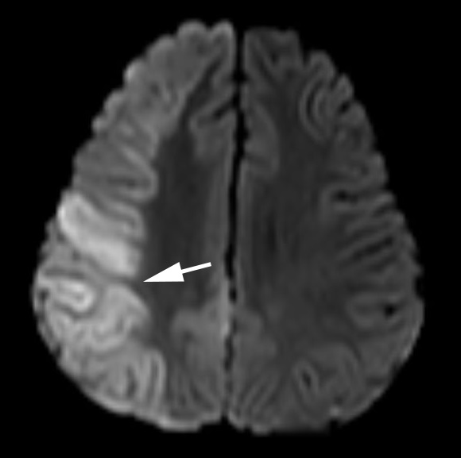

( of )
Correct: 0
Incorrect: 0
A 66 year old man awakens from heart surgery with double vision. You find that the eyes are deviated to the right. When you tell the patient to look to the left, neither eye moves beyond straight ahead gaze (“primary gaze position”) to the left. Yet when you move the patient’s head to the right, the eyes cross into left gaze. Vertical eye movements are intact and the eyes are aligned.

Where is the lesion?
Correct!
Fortunately, the manifestations of neglect gradually lessen with time, but may never completely disappear.

Horizontal saccades are generated in the cerebral hemispheres and they move the eyes toward the opposite side. This patient has impaired saccades but an intact vestibulo-ocular reflex (“supranuclear ophthalmoplegia”). Because the vestibulo-ocular reflex pathway is confined to the brainstem, the lesion causing a supranuclear ophthalmoplegia must lie either in the cerebral hemispheres or the diencephalon. Acute right hemisphere lesions (usually infarcts or hemorrhages), especially if they involve the parietal lobe or its efferent pathway, often produce ipsilateral gaze deviation and a supranuclear gaze disturbance, as described here. These phenomena may be manifestations of “motor neglect.” Patients with such lesions often display sensory aspects of hemispatial neglect, including extinction to double simultaneous visual, auditory, and tactile stimulation. Extinction of the visual field in a hemifield could reflect a subtle homonymous hemianopia, but the presence of multimodal (visual, auditory, and tactile) extinction favors neglect over a topographic disorder of vision. Patients with homonymous hemianopias rapidly develop the ability to explore into their deficient hemifield and will bisect a line segment in the midline, especially if cued. By contrast, patients with hemispatial neglect will consistently ignore stimuli on the left side and will bisect a line segment more to toward the side of the lesion. When the lesion is severe, hemispatial neglect will extend to lack of awareness of contralateral limbs (“anosognosia”). This patient had a right parietal infarct.
Incorrect
Incorrect
Incorrect